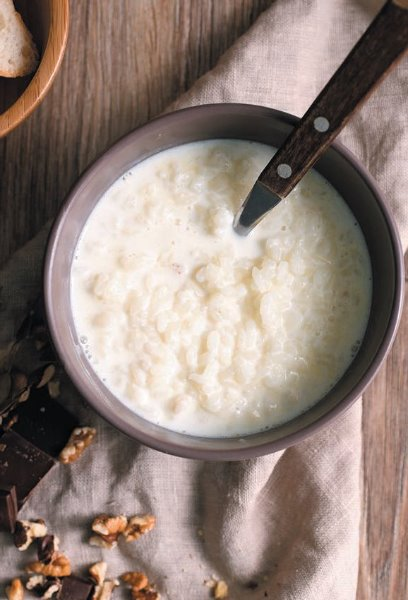

Milk rice porridge

Important! The recipe for a multicooker. As a result, it turns out a very tasty porridge,
moderate
in sweetness and salt.
Ingredients:
- Rice 150 g (washed)
- 6 tsp sugar
- Less than half a tsp salt
- 350 ml water
- 300 ml milk
- (Optional) EGGS
The cooking process:
- Wash Rice
- Put 6 tsp sugar, Less than half a tsp salt
- Fill in 350 ml water and 300 ml milk
- Put it in the multicooker for cooking on the appropriate program
- (Optional) Serve with boiled eggs